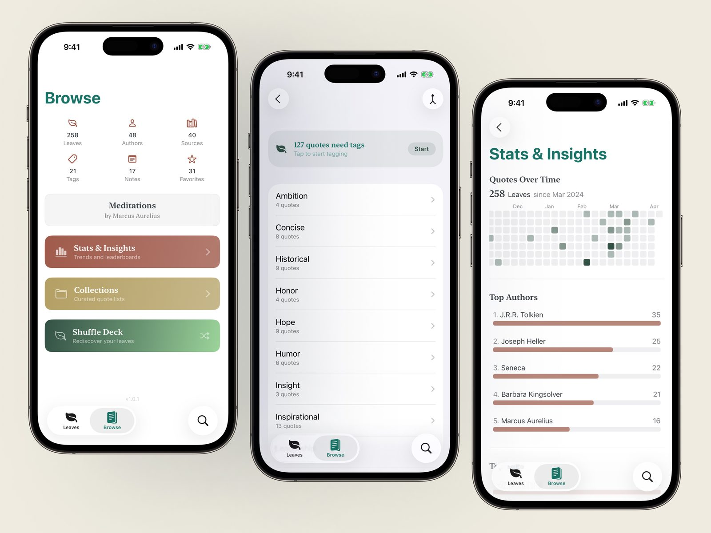
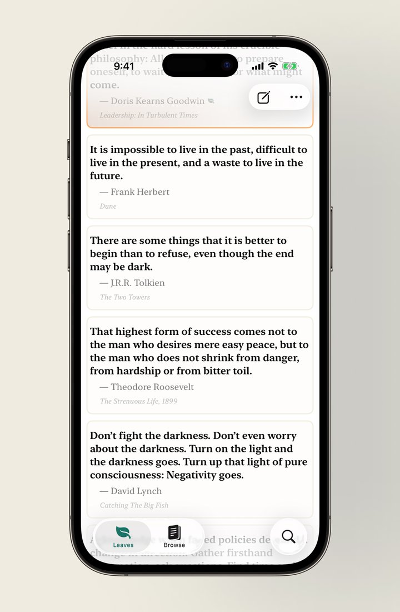

InkLeaf
A reading journal for the quotes you want to remember.
Join the TestFlight beta
Capture what stays with you
Reading leaves marks: a line that stops you mid-page, a passage you re-read three times, a sentence that names something you'd felt but never said. InkLeaf is where those marks live. Capture quotes as you read, organize them by book and author, and build a library that grows with you.

Everything a reader needs
Designed for the way readers actually work: in stolen moments, at the end of a chapter, or mid-commute with a dog-eared page.
- Capture quotes as you read
- Organize by book and author
- Search your entire library
- iCloud sync across devices
- Export and share your favorites
- Distraction-free reading mode